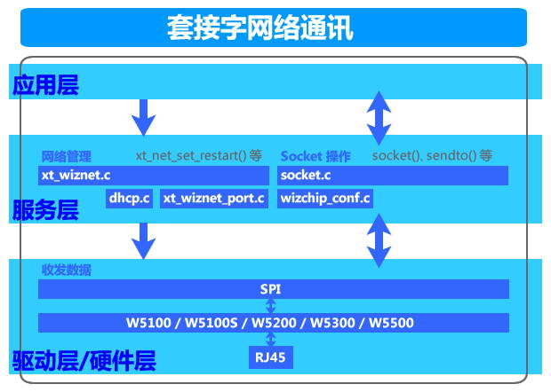
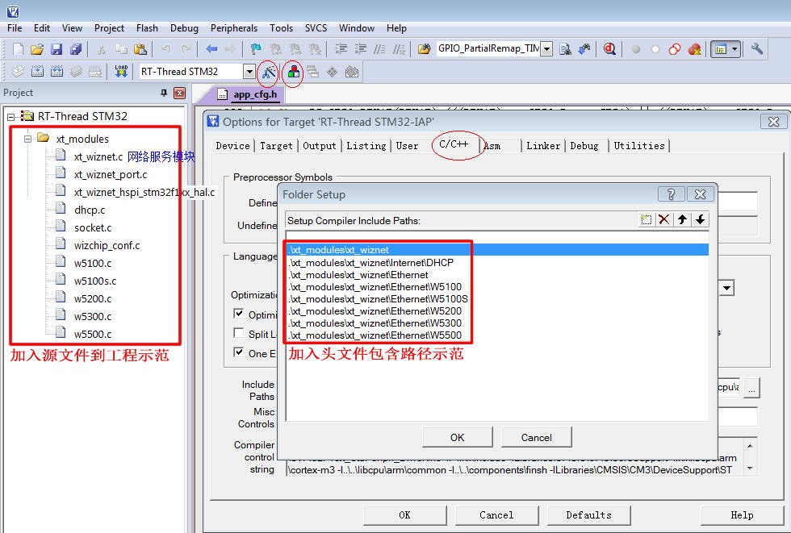
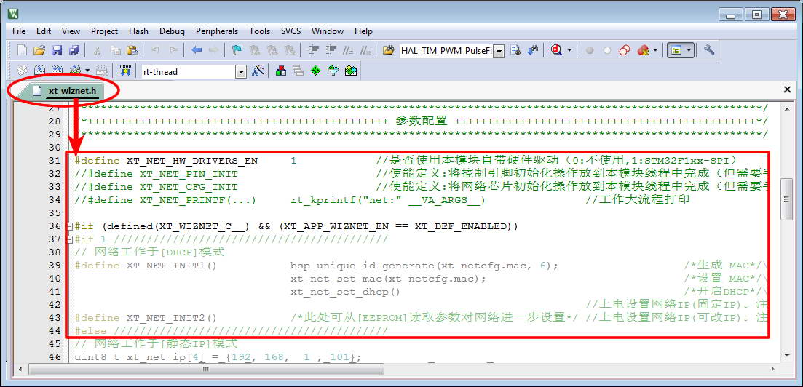
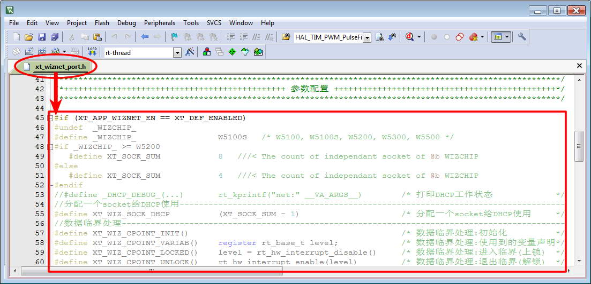

一、构架
1、功能简介
- WIZnet 为我们提供全硬件 TCP/IP 嵌入式以太网控制器，为嵌入式系统提供了更加简易的互联网连接方案。其集成了 TCP/IP 协议栈，10/100M 以太网数据链路层(MAC)及物理层(PHY)，使得用户使用单芯片就能够在他们的应用中拓展网络连接。用户可以同时使用 4 或 8 个硬件 Socket 独立通讯。提供 SPI 接口,从而能够更加容易与主控 MCU 整合。使用高效 SPI 协议支持 80MHz 速率，从而能够更好的实现高速网络通讯。
主要特点：
- 支持硬件 TCP/IP 协议：TCP, UDP, ICMP, IPv4, ARP, IGMP, PPPoE
- 支持 4 或 8 个独立端口（Socket）同时通讯
- 支持掉电模式
- 支持网络唤醒
- 支持高速串行外设接口（SPI 模式 0，3）
- 内部 8K 或 32K 字节收发缓存
- 内嵌 10BaseT/100BaseTX 以太网物理层（PHY）
- 支持自动协商（10/100-Based 全双工/半双工）
- 不支持 IP 分片
- 3.3V 工作电压，I/O 信号口 5V 耐压；
- LED 状态显示（全双工/半双工，网络连接，网络速度，活动状态）；
2、模块架构

3、环境要求
| 环境 | 要求 |
|---|---|
| 软件环境 | 实时操作系统 |
| 硬件环境 | STM32F103 及更高性能 MCU |
4、厂家代码
关于厂家代码，由于《socket.c》套接字操作大量使用了whil()死循环，不适合系统操作，所以对《socket.c》和《dhcp.c》修改并增加适配操作系统代码！
二、移植
1、添加源文件
将模块源文件、文件包含路径添加到工程，示例：

2、加入引脚定义
在工程头文件《board.h》统一加入引脚定义，示例：
// 网络服务模块+++++++++++++++++++++++
// WIZnet网络芯片SPI总线控制延时
#define XT_WIZ_SPI_NSS_EN_HOLD_TM() /* NSS 使能时保持时间(可不延时) */
#define XT_WIZ_SPI_NSS_DI_HOLD_TM() bsp_delay0us125(2) /* NSS 禁止时保持时间(延时50nS) */
// WIZnet网络芯片控制管脚的定义
#define XT_WIZ_SPI SPI2 /* 使用的哪个SPI */
#define XT_WIZ_SPI_BAUD_RATE SPI_BAUDRATEPRESCALER_4 /* 速度(分频): 72/4=18Mbit/S */
#define XT_WIZ_SPI_CLK_ENABLE() __HAL_RCC_SPI2_CLK_ENABLE() /* 串口时钟使能 */
#define XT_WIZ_SPI_CMS_CLK_EN() __HAL_RCC_GPIOB_CLK_ENABLE() /* SCK-MOSI-MISO 脚时钟使能 */
#define XT_WIZ_SPI_NSS_CLK_EN() __HAL_RCC_GPIOB_CLK_ENABLE() /* NSS 脚时钟使能 */
#define XT_WIZ_SPI_NSS_GPIO GPIOB /* NSS 所在端口(NSS由软件控制) */
#define XT_WIZ_SPI_NSS_PIN GPIO_PIN_12 /* NSS 所在管脚(NSS由软件控制) */
#define XT_WIZ_SPI_SCK_GPIO GPIOB /* SCK 所在端口 */
#define XT_WIZ_SPI_SCK_PIN GPIO_PIN_13 /* SCK 所在管脚 */
#define XT_WIZ_SPI_MISO_GPIO GPIOB /* MISO 所在端口 */
#define XT_WIZ_SPI_MISO_PIN GPIO_PIN_14 /* MISO 所在管脚 */
#define XT_WIZ_SPI_MOSI_GPIO GPIOB /* MOSI 所在端口 */
#define XT_WIZ_SPI_MOSI_PIN GPIO_PIN_15 /* MOSI 所在管脚 */
#define XT_WIZ_SPI_RX_IN_MODE GPIO_NOPULL /* MISO 输入模式(下拉/上拉/悬空)*/
#define XT_WIZ_SPI_DIRECTION_LINES SPI_DIRECTION_2LINES /* 收发使用几线(全双工/半双工) //
#define XT_WIZ_SPI_AFIO_REMAP() __HAL_AFIO_REMAP_SPI1_ENABLE() // SPI 引脚重映射(不使用则屏蔽)*/
#define XT_WIZ_SPI_HANDLER xt_wiz_hspi /* SPI 句柄 */
#define XT_WIZ_RST_CLK_ENABLE() __HAL_RCC_GPIOA_CLK_ENABLE() /* RST 所在外设(使能外设时钟) */
#define XT_WIZ_RST_GPIO GPIOA /* RST 所在端口 */
#define XT_WIZ_RST_PIN GPIO_PIN_1 /* RST 所在管脚 */
#define XT_WIZ_RST_EN() XT_WIZ_RST_GPIO->BRR = XT_WIZ_RST_PIN // RST有效
#define XT_WIZ_RST_DI() XT_WIZ_RST_GPIO->BSRR = XT_WIZ_RST_PIN // RST无效
#define XT_WIZ_SPI_NSS_EN() XT_WIZ_SPI_NSS_GPIO->BRR = XT_WIZ_SPI_NSS_PIN // NSS有效
#define XT_WIZ_SPI_NSS_DI() XT_WIZ_SPI_NSS_GPIO->BSRR = XT_WIZ_SPI_NSS_PIN // NSS无效
3、加入初始函数
在应用初始化函数中加入模块初始化，示例：
int bsp_board_init(void)
{
.
.
#if (XT_APP_WIZNET_EN == XT_DEF_ENABLED)
xt_net_pin_init();
#endif
.
.
#if (XT_APP_WIZNET_EN == XT_DEF_ENABLED)
xt_net_cfg_init();
#endif
.
.
}
void rt_init_thread_entry(void *p_arg)
{
.
.
#if (XT_APP_WIZNET_EN == XT_DEF_ENABLED)
xt_net_ipc_init();
#endif
.
.
#if (XT_APP_WIZNET_EN == XT_DEF_ENABLED)
xt_net_thread_init();
#endif
.
.
}
补充说明：如果工程有自动初始架构，可以由宏XT_HARD_INIT_2_TAB_EXPORT(func,desc)、XT_DEV_INIT_2_TAB_EXPORT(func,desc)、XT_MSG_INIT_2_TAB_EXPORT(func,desc)、XT_APP_INIT_2_TAB_EXPORT(func,desc)自动调用函数进行初始化！
4、包含头文件
在使用模块的应用程序中加入头文件包含，示例：
#if (XT_APP_WIZNET_EN == XT_DEF_ENABLED)
#include "xt_wiznet.h"
#endif
5、配置模块参数
根据实际的使用环境配置模块参数，示例：


补充说明：由于标准模块是不允许用户修改的，所以在应用时请启用头文件映射，在映射头文件修改配置！
6、使能模块开关
在工程头文件《application.h》统一使能模块开关，示例：
#define XT_DEF_DISABLED 0 /* 禁用模块 */
#define XT_DEF_ENABLED 1 /* 使能模块 */
#define __XT_WIZNET_REMAP_H
#define __XT_WIZNET_PORT_REMAP_H
#ifndef XT_APP_WIZNET_EN
#define XT_APP_WIZNET_EN XT_DEF_ENABLED /* 网络服务模块 */
#endif
三、使用
1、应用示例
本示范只是以最简单方式展示模块的基本使用，并非一个应用实例！
#include "xt_wiznet.h"
// UDP 演示
void app_udp_thread_entry(void *p_arg)
{
unsigned char *pbuf;
uint16_t wkver, lkver;
uint16_t len, port; //端口
uint8_t ip[4]; //IP地址
#define UDP_SK_NUM 0 //使用第几个socket,0~7
#define UDP_SK_BUFSZ 10 //缓冲大小
while (0 == (pbuf = rt_malloc(UDP_SK_BUFSZ)))
{
rt_thread_delay(1);
}
udp_socket:
while (((wkver = xt_net_get_rstver()) & 0x8000) == 0) //等待网络初始化完成
{
rt_thread_delay(1);
}
rt_thread_delay(100);
rt_kprintf("socket 0: net restart!\r\n");
udp_link:
while (((lkver = xt_net_get_lnkver()) & 0x8000) == 0) //等待插上网线
{
rt_thread_delay(1);
}
rt_kprintf("socket 0: net link up!\r\n");
udp_build:
socket(UDP_SK_NUM, Sn_MR_UDP, 1001, 0); //打开socket（UDP协议,本机端口:1001）
rt_kprintf("socket 0: open!\r\n");
while (1)
{ //如果socket异常,则...
if (xt_socket_chk(UDP_SK_NUM, Sn_MR_UDP, 0) == 0) goto udp_build;
if (wkver != xt_net_get_rstver()) goto udp_socket; //如果网络重启了,则...
if (lkver != xt_net_get_lnkver()) goto udp_link; //如果网线拔掉了,则...
xt_socket_ot_set(UDP_SK_NUM, 0xFFFFFFFF/*永久*/, 0); //修改本次socket超时操作为永远（可在另一线程使用 xt_socket_ot_set(UDP_SK_NUM,0,0) 强制超时退出）
len = xt_socket_recv_chk(UDP_SK_NUM); //检测socket是否收到数据 （可在另一线程使用 xt_socket_ot_set(UDP_SK_NUM,0,0) 强制超时退出）
len = len > UDP_SK_BUFSZ ? UDP_SK_BUFSZ : len; //处理数据大小与缓冲大小关系
len = recvfrom(UDP_SK_NUM, pbuf, len, ip, &port); //socket接收数据（同时得到对端的IP及端口）
xt_socket_ot_set(UDP_SK_NUM, 50, 0); //修改本次socket超时操作为50个系统节拍
if (sendto(UDP_SK_NUM, pbuf, len, ip, port) != len) //socket发送数据（把收到的数据返回给对端）
{ //UDP为无连接,socket发送可随时向目标发送
rt_kprintf("socket 0: sendto return error!\r\n");
}
}
}
#include "xt_wiznet.h"
// TCP 客户端演示
void app_tcp_thread_entry(void *p_arg)
{
unsigned char *pbuf;
uint16_t wkver, lkver, cnt;
uint16_t rlen, tlen, port = 1002; //对端端口!!!!!!
uint8_t ip[4] = {192, 168, 3, 222}; //对端IP地址!!!!
uint8_t t = 1; //自动维持TCP连接(@5秒)
#define TCP_SK_NUM 1 //使用第几个socket,0~7
#define TCP_SK_BUFSZ 100 //缓冲大小
while (0 == (pbuf = rt_malloc(TCP_SK_BUFSZ)))
{
rt_thread_delay(1);
}
tcp_socket:
while (((wkver = xt_net_get_rstver()) & 0x8000) == 0) //等待网络初始化完成
{
rt_thread_delay(1);
}
rt_thread_delay(300);
rt_kprintf("socket 1: net restart!\r\n");
tcp_link:
while (((lkver = xt_net_get_lnkver()) & 0x8000) == 0) //等待插上网线
{
rt_thread_delay(1);
}
rt_kprintf("socket 1: net link up!\r\n");
while (1)
{
tcp_build:
setsockopt(TCP_SK_NUM, SO_KEEPALIVEAUTO, &t); //打开TCP连接自动维持(@5秒)(keepalive帧)
do
{
if (wkver != xt_net_get_rstver()) goto tcp_socket;//如果网络重启了,则...
if (lkver != xt_net_get_lnkver()) goto tcp_link; //如果网线拔掉了,则...
rt_thread_delay(2);
socket(TCP_SK_NUM, Sn_MR_TCP, 1002, Sn_MR_ND); //打开socket（TCP协议,本机端口:1002）
}
while (connect(TCP_SK_NUM, ip, port) <= 0); //连接TCP服务端
rt_kprintf("socket 1: open and connected!\r\n");
//setsockopt(TCP_SK_NUM, SO_KEEPALIVESEND, 0); //如果没有打开TCP连接自动维持,则要求应用定时发送维持帧
tlen = sizeof("tcp client send data!") - 1;
memcpy(pbuf, "tcp client send data!", tlen);
if (send(TCP_SK_NUM, pbuf, tlen) != tlen) //socket发送数据
{
rt_kprintf("socket 1: send len error!\r\n");
disconnect(TCP_SK_NUM); //断开TCP连接
close(TCP_SK_NUM); //关闭socket
goto tcp_build;
}
for (cnt = 0; cnt < tlen; cnt += rlen) //socket接收数据
{
xt_socket_ot_set(TCP_SK_NUM, 100/*1秒*/, 0); //修改本次socket超时操作为1秒（可在另一线程使用 xt_socket_ot_set(TCP_SK_NUM,0,0) 强制超时退出）
rlen = xt_socket_recv_chk(TCP_SK_NUM); //检测socket是否收到数据 （可在另一线程使用 xt_socket_ot_set(TCP_SK_NUM,0,0) 强制超时退出）
rlen = rlen > TCP_SK_BUFSZ ? TCP_SK_BUFSZ : rlen;//处理数据大小与缓冲大小关系
rlen = recv(TCP_SK_NUM, pbuf, rlen); //socket接收数据（要求服务端返回客户端发送数据）
//break;
}
//如果socket异常,则...
if (xt_socket_chk(TCP_SK_NUM, Sn_MR_TCP, 0) == 0) goto tcp_build;
//if (wkver != xt_net_get_rstver()) goto tcp_socket;
//if (lkver != xt_net_get_lnkver()) goto tcp_link;
disconnect(TCP_SK_NUM); //断开TCP连接
close(TCP_SK_NUM); //关闭socket
rt_kprintf("socket 1: closed!\r\n");
}
}